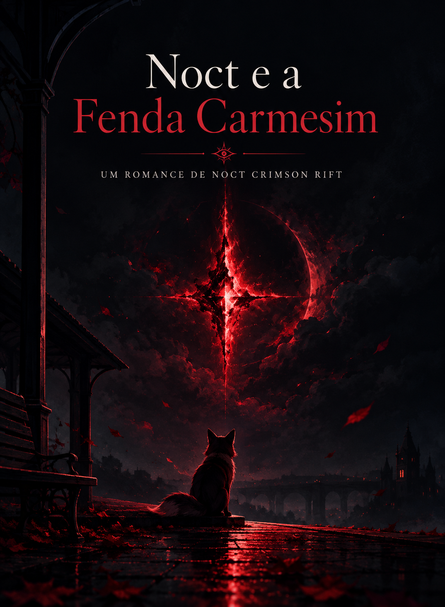

O livro está sendo escrito
Os capítulos aparecem aqui assim que forem publicados.

Um romance de F. G. Santos
Algumas portas chamam com a voz de quem você perdeu.
O livro
Noct não procura salvar o mundo. Procura só uma razão para continuar nele.
Anos atrás, Mira saiu antes do amanhecer e deixou um bilhete em cima da mesa: Volto logo. Ele a procurou em todas as estações, menos na deles. Depois parou de procurar e aprendeu a viver como quem tenta esquecer.
Mas, quanto mais ele tenta esquecer, mais alto alguma coisa chama. Uma brasa atrás das costelas, acesa desde o bilhete, que puxa sempre para o mesmo lado.
Para Pedravelha, a vila de pedra onde ele um dia andou meio passo atrás dela, em tardes de feira. Ali, à beira de uma fenda vermelha que respira nas noites de chuva, as pessoas falam baixo, as raposas observam de longe e alguém parece lembrar dele, mesmo que ele não lembre de ninguém.
Noct diz a si mesmo que parou ali por acaso.
Pedravelha sabe que não.
— Minha avó dizia que a vila foi construída em cima de uma porta. E que de tempos em tempos ela lembra disso.
Uma fantasia sombria sobre ausência, memória e o que fica quando alguém vai embora sem se despedir.
Ler
O livro está sendo escrito
Os capítulos aparecem aqui assim que forem publicados.
O autor
F. G. Santos é um autor brasileiro interessado em fantasia sombria, mundos melancólicos e personagens marcados por conflitos internos. Em sua estreia literária, busca explorar temas como perda, culpa, identidade, memória e a necessidade de encontrar sentido mesmo quando seguir em frente parece não ter mais propósito.
Noct e a Fenda Carmesim é seu primeiro livro, nascido da ideia de um personagem que não procura salvar o mundo. Ele procura apenas uma razão para continuar nele.